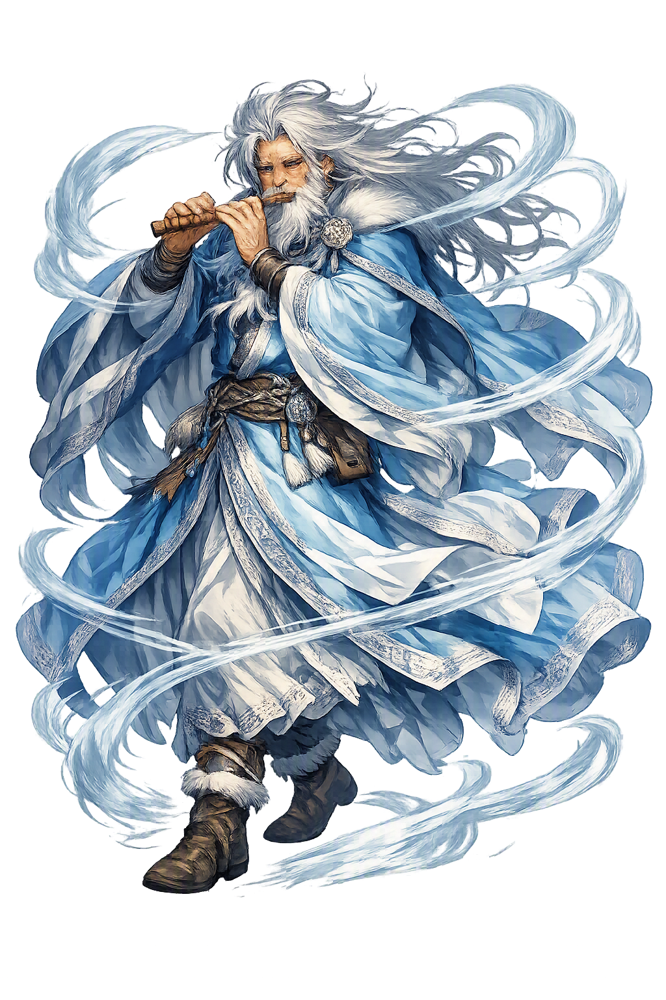

Stories of Stribog
The sources for Stribog are two lines long: a place in the chronicle's list of drowned idols, and a genealogy in the nation's greatest poem. Everything else — his character, his rites, his season — is inference, and this entry says so wherever inference is doing the work.
When Vladimir's baptism swept the old pantheon into the Dnieper in 988, the Primary Chronicle preserved the full list of the drowned: Perun, Khors, Dazhbog, Stribog, Simargl, and Mokosh. No anecdote attaches to Stribog — no oath, no sorcerer, no gloss, no weeping crowd. Of the six he is the most silent: not first like Perun, not glossed like Dažbog, not folk-remembered like Mokosh. Yet the chronicler's list is itself a kind of myth — the orderly procession of gods into the river, each name checked off as it sinks, is the Christian founding story of Rus', and Stribog's place in that procession is the entire record of his worship. A god can be a major power and still leave no story; the river took his narrative along with his statue, and the list is the wake.
The single vivid sentence about Stribog stands in the Slovo o polku Igoreve (c. 1185), the greatest work of Old Rus' literature. As Igor's doomed army rides out against the Polovtsians, the poet summons the omens, and the winds rise on cue: 'Then the winds, Stribog's grandsons, blew from the sea' — a squall driving the dust and the portents before it. The phrase is a fossil of theology. Where a monk would write 'God sent a storm,' the epic poet instinctively reaches for kinship: the winds are not Stribog's subjects or his weapons but his grandsons, doing what grandsons do — arriving uninvited, raising a racket, unmistakably of the family. Two centuries after the idols sank, the grammar of the old pantheon still blew through the language like weather that knows its own name.
Everything else about Stribog is a problem on a philologist's desk. The second half of the name is *bogъ, 'god' — the same element that gives us Dažbog, 'giving god' — but the first half, *strib-, has no agreed root. Comparisons with words for 'arrow' and for 'spreading' or 'scattering' have circulated in the literature for a century; none carries the field, and even the vowel of the name wavers in the manuscript tradition. Some scholars have wondered whether the first element is not Slavic at all — a loan like the Iranian Simurgh behind Simargl — though no convincing donor language has stepped forward. The handbooks (Gieysztor; Brückner) state the honest position plainly: we hold the god's name, a wind-function inferred from one epic line, and nothing else. A whole deity, reduced to one sentence and an unsolved etymology.
It is worth stating plainly what the tradition does not contain, because Stribog is the clearest case of a god known by structure rather than by story. No chronicle puts a curse in his mouth; no treaty swears by him; no saint inherits his day; no festival, icon, or temple is recorded; and no folk song or charm preserves his name past the Middle Ages. His rank — sixth of the six gods of the capital — implies a cult of real standing; his total silence implies that the sources which would have given him a biography either never existed or did not survive. Modern Slavic Native Faith has had to invent his feast-day, his attributes, and his character outright — a revealing anachronism, since Stribog today is exactly what a wind-god would be if reconstructed from the bare name alone. The scholarship knows the limits, and says so; the temple should too.
Winds
Stribog is the wind-god of the Kyiv pantheon, sixth of the six idols cast into the Dnieper in 988. His name's second element is the word for 'god'; its first is opaque — but the epic tradition calls the winds his grandsons, and that one formula is the whole of his surviving theology.
His domain by every ancient inference: the moving air that brings thaw, storm, and war-weather.
The Slovo o polku Igoreve calls the winds 'grandsons of Stribog' — a complete genealogy in one phrase.
Listed among the idols of Kyiv in the Primary Chronicle: Perun, Khors, Dazhbog, Stribog, Simargl, Mokosh.
No other god's name so resists analysis; its first element is an open problem of Slavic philology.
From the original script to the living URL
Stribog
The name survives in scholarly transliteration. Stribog is the standard Slavic romanisation, documented in academic sources — “Father of winds”. Because the spelling uses only Latin letters, the form is the same in both ASCII and Unicode.
No indigenous writing system is securely attested for individual slavic names. The form shown is a modern scholarly transliteration.
stribog
The plain stribog form is identical to the Unicode restoration. Because this name is already written in Latin letters, no diacritics, stress, or script information were lost — only capitalization differs.
Stribog
The Unicode restoration does not need to recover lost marks for Stribog. Its value is canonical spelling and consistent cataloguing, not the reconstruction of erased orthography. The domain is readable as-is to both DNS and humanity.
Stribog.com
This restoration is written entirely in ASCII letters — no Punycode encoding stands between Stribog and the DNS. The domain reads identically to machines and to human eyes.
Owned, ideal, and ASCII forms of Stribog
Stribog
The full Unicode restoration. stribog.com is not in the PuniCodex collection — it is watched for release; if it drops, this temple upgrades to an owned flagship.
How Stribog was spoken
How Stribog is preserved in writing
No indigenous writing system is securely attested for individual slavic names. The form shown is a modern scholarly transliteration.
Contribute scholarly provenance →Stribog is the god of what passes through. Wind cannot be sworn by, cannot be fed, cannot even be consistently blamed — and so the tradition left him almost nothing to hold. What the epic gives him instead is better than a cult: a family. The winds are his grandsons — not his subjects, not his weapons, his grandsons, the way weather actually behaves, arriving uninvited, full of intentions, unmistakably related. The phrase is a miniature of how polytheism worked before it learned to be systematic: the world is not governed, it is inhabited, by beings with kin. Stribog matters to the modern imagination precisely because he is so nearly empty — a vessel into which every age pours its theory of the wind, from philology's unsolved root to fantasy's storm lord. Perhaps a god who is only a name and a family of winds is the truest wind-god of all: felt everywhere, pinned down nowhere, and quoted — 'the winds, Stribog's grandsons' — whenever the air itself needs a lineage.
Enter Extended Lore